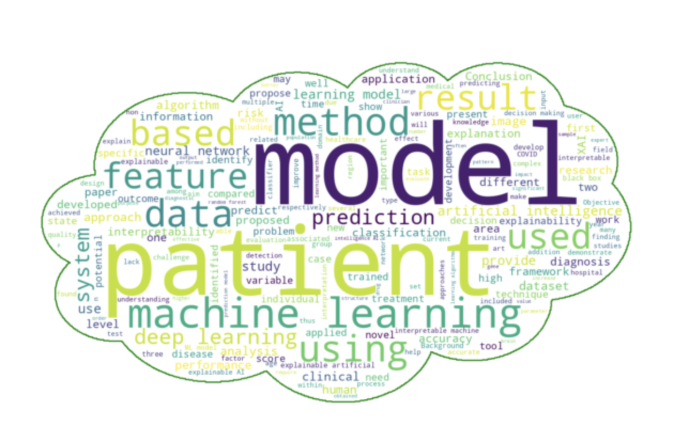
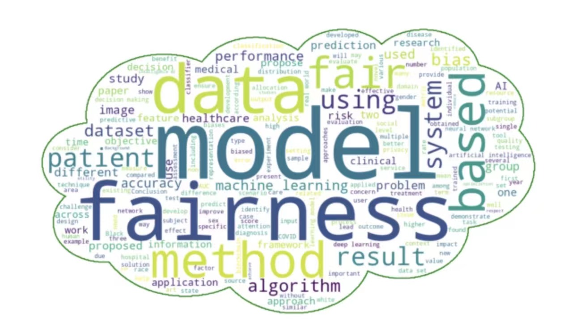

-
chat-gpt with XAI

Explainable Artificial Intelligence (XAI) is a field that focuses on the interpretability and comprehensibility of machine learning models. It aims to address the issue of "black box" models by providing human-understandable explanations and visualization tools that allow individuals to gain insights into the model's predictions and decision-making processes. The goal of XAI is to open up the inner workings of the model, enabling users to understand how it utilizes input data to make predictions and decisions, rather than solely accepting its outcomes. Through interpretability, individuals can verify the accuracy, fairness, and reliability of the model and identify potential biases and unfairness. The importance of XAI lies in enhancing trust and acceptability in artificial intelligence systems, facilitating effective communication and collaboration with users, and ensuring that the decision-making processes of AI systems are transparent, auditable, and understandable. With XAI, we can build more trustworthy and auditable AI systems, providing individuals with a means to comprehend and explain the workings of the model for better application and evaluation of its suitability in practical use cases.
-
chat-gpt with fairAI

Fair AI, also known as Fairness in Artificial Intelligence, is an important area of research and practice that focuses on mitigating biases and promoting equitable outcomes in machine learning and AI systems. It recognizes that AI models and algorithms can inadvertently perpetuate and amplify existing social, cultural, and historical biases present in the data used for training. Fair AI aims to address these biases and ensure that AI systems treat individuals fairly and without discrimination based on sensitive attributes such as race, gender, age, or socioeconomic status.
Fair AI involves developing techniques, methodologies, and evaluation metrics to measure and quantify fairness in AI systems. It seeks to identify and rectify biases that may arise from data collection, preprocessing, feature selection, or algorithmic decision-making. Fair AI also explores ways to incorporate fairness considerations during the design, development, and deployment phases of AI systems to minimize disparities and ensure equitable outcomes across different user groups.